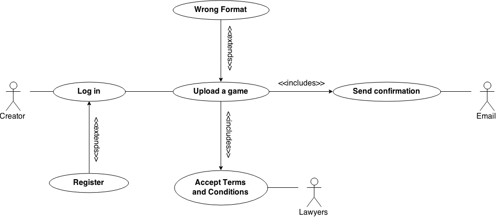

SEMINARS 1-2-3-4
Requirements
STAKEHOLDERS
DOMAIN REQUIREMENTS
GLOSSARY
DIAGRAMS
Static Analysis Diagram

State Diagram -> Log in
Activity Diagram -> Playing a game

Sequence Diagram -> Voting a game

TEXTUAL REQUIREMENTS
1-: Tester wants to modify an interaction between player and game
2-: Administrator wants to remove an user. The reason is because user seems inactive since 10 months.
3-: Tester wants to update website with comments about the new video-game
USE CASES
USE CASES DIAGRAMS
PURCHASE IN STORE

UPLOAD A GAME 
USE CASES DESCRIPTION
PURCHASE IN STORE
CONTEXT: User wants to purchase a game in the store.
PRIMARY ACTORS: User (generalizes to Player).
SUPPORT ACTORS: Internet provider, E-mail, Transfer System (such as Paypal).
PRECONDITIONS: The user must be logged in as a Player.
SUCCESSFUL POSTCONDITIONS: The game has been purchased.
UNSUCCESSFUL POSTCONDITIONS: There has been an error while buying the game.
BASIC FLOW:
---| 1. User looks for a game searching it by its words or category.
---| 2. System shows the results of the query.
---| 3. User picks up the desired game.
---| 4. System shows game's window what includes its creator and a brief description.
---| 5. User press the purchase or download button.
---| 6. System displays the transaction window and ask for confirmation.
---| 7. User confirms the purchasing.
---| 8. System redirects the user to the transfer system.
---| 9. User has paid correctly.
---| 10. System informs the user by email and send a unique download link.
---| 11. User starts downloading the game and confirms when it has finished.
EXTENSIONS:
---| 2.a The query result shows that our database does not have that game.
---| 2.a.1 Offer similar games.
---| 2.a.2 Go back to step 1.
*
---| 7.a Inform the user that our servers might be crashed and they must wait a few minutes.
---| 7.b The user confimation information is mistaken.
---| 7.b.1 Launch an extension use case "User's confirmation".
*
---| 8.a Transfer system is down.
---| 8.a.1 Wait for a few minutes then redirect the user again to the transfer system.
*
---| 11.a User can not open the download link.
---| 11.a.1 Send another download link, better if it is stored in another server.
IMPLIED STAKEHOLDERS
UPLOAD A GAME
CONTEXT: User wants to upload a game.
PRIMARY ACTORS: User (generalizes to Creator).
SUPPORT ACTORS: Internet provider, E-mail, Uploading System, User (generalizes to Tester)
PRECONDITIONS: The user must be logged in as a Creator.
SUCCESSFUL POSTCONDITIONS: The game has been uploaded correctly.
UNSUCCESSFUL POSTCONDITIONS: The uploading process have failed.
BASIC FLOW:
---| 1. User presses the upload button.
---| 2. System shows the upload window.
---| 3. User uploads the game in a specific format.
---| 4. System checks the file's corectness.
---| 5. User confirms and accepts the terms and conditions.
---| 6. System notifies the user by e-mail that the game has been uploaded correctly.
EXTENSIONS:
---| 3.a User can not upload the game into our servers.
---| 3.a.1 System tells the user to wait for a few minutes.
---| 3.a.2 Go back to step 3.
*
---| 4.a System notices that the file format is not correct.
---| 4.a.1 Indicate the mistakes in the file's format.
---| 4.a.2 Go back to step 3.
*
---| 6.a E-mail provider is crashed.
---| 6.a.1 Tell the user that he will receive the confirmation e-mail lateky, although the game has been upload correctly.
IMPLIED STAKEHOLDERS
FUNCTIONAL REQUIREMENTS
1-: Players must be able to rate each game.
2-: Games must be free of charge.
3-: Administrators should be able to moderate all type of user.
NON-FUNCTIONAL REQUIREMENTS
1-: Tester wants to modify an interaction between player and game.
2-: All the players that wants to get in the system simultaneously.
3-: The system must to fullfill the law of personal data and security.
4-: The system don't have to take a delay of > 5seconds. If it's overcomed, then the system will be restarted.